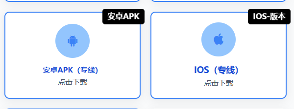
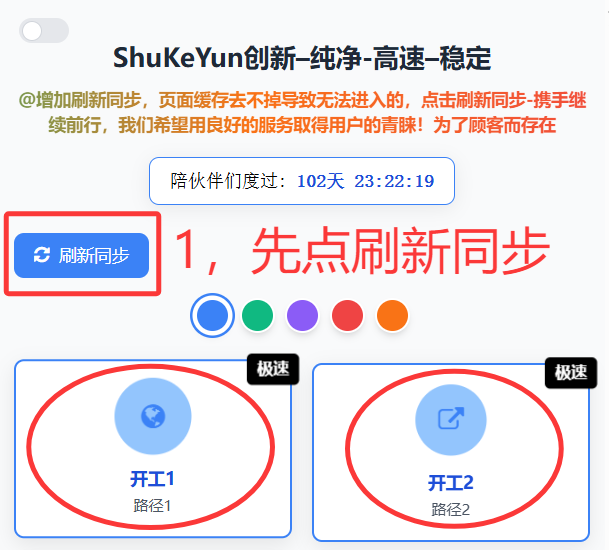
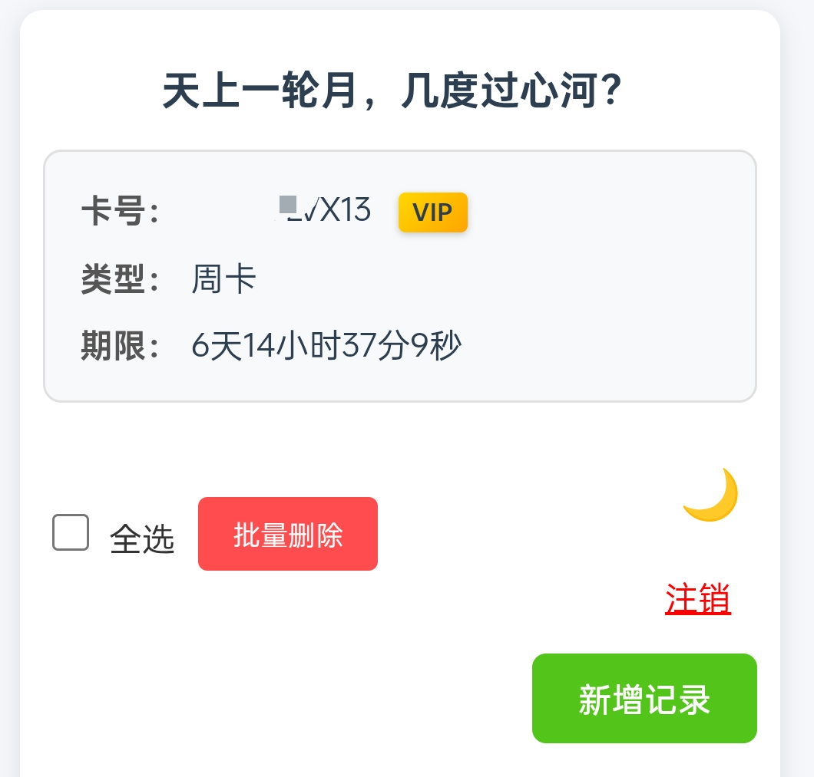

官方指导文档
欢迎您光临！
认真阅读简单的文档指南。本文档将指导您完成从安装到使用的全过程。
重度用户务必下载app使用！牢记主站地址！牢记主站地址！牢记主站地址！永不更换主站地址！➡️https://bj-767.pages.dev/祝您一路顺风！
宝宝让我们开始吧
1：下载安装包
访问我们的官方网站，下载适用于您手机的安装包，➡️https://bj-767.pages.dev/ 值得一提的是，我们的主站几乎不会改变地址，所以这是唯一站点地址,比如说我们现在正在红框标记的文档内容里，那么您要做的就是根据自己的手机操作系统来去下载对应的apk或者IOS的安装包，为什么一定要下载安装包？如果您把主站成功安装到手机设备上，那么你就会获得一个永不改变的地址，即使出点小问题，待维护完毕后，只需要打开app，点左上角的刷新同步功能后，再进行访问就可以了，下面我将为您介绍刷新同步！
图1：官方网站内容
2：异步刷新同步
当域名变红，无法扫码，不要慌，此时管理人员正在比你要着急的紧急维护中，待维护完毕后，你只需要打开app，点击如图所示的刷新同步！然后正常选择通道进入即可，整个过程无需您更换任何地址，方便快捷。
图2：官方网站内容
3：使用介绍
我们内置了许多模板，包括星标模板，请根据您的使用偏好和需求来具体选择，支持任何模板自定义/或者随机，您只需要花费几秒钟轻轻点击两下，即可完成您的业务！点击新增记录即可开始！值得注意的是星标模板需要输入年龄和城市，而非星标模板只需要输入姓名和传头像再点确定就好，星标并不意味着好，建议使用默认首位的即可
图3：官方app内容
4：关于顺丰模块
我们内置了许多顺丰要求的材料证明模块，比如付款记录，体检报告，小票型的记录，部分都是支持链接打印机使用的，如果您有打印机，那您做顺丰业务将会事半功倍，众所周知，顺丰没有百分百通过的，材料只起到辅助作用，实际受人工审核因素影响比较大。
图4：暂无内容
5：新增病例自定义生成
有打印机的可以支持此业务，市场价通常在40-60
关于卡密说明
声明
@ShukeYun2025
1-本站从未出售过任何永久卡，任何宣称永久亦或贩卖源码的行为均属诈骗
2-如果您在本站遇到任何使用问题，请及时联系管理员协助您解决
3-如果您有任何反馈，请联系反馈给管理员
4-本站承诺，始终坚持高速-稳定-纯净-顾客第一的原理原则去展开服务
5-我们因顾客而存在
文档随时更新-感谢您的阅读使用！Thanks